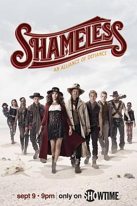

无耻之徒(美版) 第九季 / Shameless Season 9
又名：无耻家庭(美版)
作品信息
| 导演 | 马克·梅罗德 / 伊恩·B·麦克唐纳 / 约翰·威尔斯 |
| 编剧 | 约翰·威尔斯 / 保罗·艾伯特 / 多米尼克·莫里索 |
| 主演 | 威廉·H·梅西 / 埃米·罗森 / 伊森·卡特科斯基 / 珊诺拉·汉普顿 / 杰瑞米·艾伦·怀特 / 史蒂夫·豪威 / 艾玛·肯尼 / 卡梅隆·莫纳汉 / 迈克尔·帕特里克·麦克吉尔 / 伊西多拉·格瑞新特 / 露比·莫迪恩 / 克里斯蒂安·艾赛亚 / 艾略特·弗莱彻 |
| 类型 | 剧情 / 喜剧 |
| 制片国家/地区 | 美国 |
| 语言 | 英语 |
| 首播 | 2018-09-09(美国) |
| 季数 | 9 |
| 集数 | 14 |
| 单集片长 | 55分钟 |
| IMDb | tt7613412 |
最后一次看到是 2026-08-12T21:12:02+08:00 · 豆瓣原页